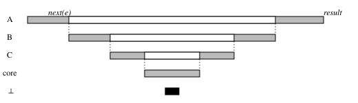

Function Hooks: Core Architecture
1. A Module of Hooks
Hooks live in a hooks.json file, today of four extant types: command, prompt, agent, and http.
We put forward a fifth kind, the function: hooks.json may also name a module, a file with extension .js, .ts, .jsx or .tsx beside it in the plugin’s hooks/ directory. Functions compose, giving plugins a richer interface than commands can, fulfilling the dream of visual extensibility. A shell hook is a contract with an environment; a function hook is a contract with the engine. We hoist OS-integration and cross-surface complexity into $ so that plugin authors can focus principally on the business and presentation logic inherent to their problem.
A hook today, from the public documentation:
{ "hooks": {
"PreToolUse": [
{ "matcher": "Bash",
"hooks": [ { "type": "command", "command": "./hooks/block-rm.sh" } ] } ] } }The same hook-set as a function. In hooks/hooks.json, one new key beside any entries above:
{ "modules": ["./my-hooks.ts"] }In hooks/my-hooks.ts, one may register their hook sequence via the on callback registrar:
export function register(on) {
⋯
on("tool.call", ($, e, next) => {
if (e.tool === "Bash" && e.command == "rm -rf /")
return { deny: "Destructive command blocked by hook" }
return next(e)
})
⋯
}
We provide narrow, strict typings for on, $, e, etc. The literal type of the provided hook type e.g. "tool.call" narrows the callback appropriately. We as well offer a matcher between the event and the hook for convenience (§6.1), based on a general substructural pattern-matcher.
1.1 Anatomy
We call this file a plugin’s hooks-module. It exports one function, register(on, options), which registers the plugin’s hooks such that we know the events a plugin hooks before any hook runs: claude plugin validate lists them. The plugin’s manifest and folder are the same; command, prompt, agent and http hooks hooks.json are kept running beside it. Options are sourced and configured through the extant plugin-level mechanism (i.e. userConfig).
1.2 Vocabulary
| term | meaning |
|---|---|
| plugin | The discrete unit of installation, management, and discovery: a manifest and its skills, agents, MCP servers and hooks. We avoid perturbing this layer at all. |
| hooks-module | The .js or .ts file under hooks/ that a plugin’s hooks.json names in modules. |
| hook | A function registered on an event. Every hook has the signature ($, e, next). |
| event | An invoking of a method on $, such as $.tool.call. Hooks are registered on events; invoking this method runs the corresponding hook-stack, sans recursion (§6.4). |
$ / engine interface | The engine interface, i.e. the set of affordances we give to plugins; Its methods are always $.noun.event ($.tool.call, $.ui.log); every method is a hookable event. |
2. Algebra
A hook is Koa-style middleware: it reifies an endomorphic continuation. Every hook has the signature ($, e, next) ⇒ R | Promise<R>, where R is the event’s result. This leads to easy folding.
$ | The engine interface: the state a hook may read and the side effects it may cause. The broad, extensible, immutable affordance surface. The world by any other name. |
e | The event: the argument of the method on $, a plain immutable value; each hook receives it and passes it, possibly rewritten, to next. A desideratum to be made real. |
next | The continuation: this dispatch, as the host built it for this hook. Called, it runs the next hook registered on this event and returns a promise of the result of the rest of the chain; a hook may call it once, many times, or not at all, and may optionally be asynchronous. It also carries next.signal and next.is (§3.1), for advanced use-cases. |
2.1 Order Is Nesting
An installation of Claude Code has a sequence of plugins registered, while each plugin registers a sequence of hook callbacks. A hook registered on a given event has a registration order, which dictates composition. A sequence on(X, A), on(X, B), on(X, C) folds to X = A(B(C(⊥))): plugins registered earlier sit “above” and plugins registered later “beneath” (on ⊥, see §6.2).
As a matter of structure, earlier registration grants a plugin more authority since it wraps more. Core plugin(s) that specify default behavior are registered last and thus control the least.

next.2.2 Five Placements
Every callback decides where its logic runs relative to the point where the action happens; that point is the invocation of the last-registered callback, commonly a core plugin. Five forms, each on tool.call; some further configurations are expressible using standard promise rules.
| placement | what the hook does | on tool.call |
|---|---|---|
| before | Do the work, then let the rest of the chain run after. | $.ui.log("about to run " + e.tool); return next(e) |
| after | Execute the action first, then access its result by awaiting the promise. | const result = await next(e); $.ui.log(e.tool + " ran"); return result |
| during | Start the rest of the chain and work alongside it, via floating the below promise. | const pending = next(e); $.ui.log("running " + e.tool); return pending |
| instead | Override everything below. | return { deny: "no tools allowed" } |
| modifying | Forward a modified event. | return next({ ...e, timeout: 30 }) |
One event therefore serves where command hooks needs a pre-event and a post-event, and a hook must assume that any hook above it may change its result or never call it; more importantly, this mechanism gives the affordance for more flexible structures of concurrency.
2.3 Who Orders the Plugins
The list is ordered by plugin: the plugins an administrator put first, then the plugins in dependency order, then the plugins an administrator put last. Within one plugin, hooks keep the order in which they were registered. Prepending and appending plugins is the organization’s management strategy, and it’s itself plugin-shaped: which team gets which plugins, and which plugins may load at all, are hooks on the events that register plugins, so an allowlist or a denylist is a plugin an organization puts first (§5). Controls thus naturally arise.
3. Events
3.1 The Event Object
The event is the method’s argument and nothing else. e on tool.call is what $.tool.call was called with: the tool and its arguments, as own fields, so $.tool.call(e) is the same object a hook receives. Events are immutable plain values: to modify, you must pass next a copy with a changed field, as the modifying row of §2.2 does. What the dispatch itself provides is on next:
next(e) | Runs the rest of the chain with e and resolves to the event’s final result. |
next.signal | Tells any hook when the event is done or has been aborted: an AbortSignal, one per dispatch, that fires when the whole chain has returned or cancelled, so that the hook can stop any floating jobs or work. |
next.is(type, e) | Whether this dispatch is the specified event; a type predicate, so under * it narrows e to that specific event’s argument (§6.3). Singularly useful for *. |
next.event | The name of this event, for a hook on * to log or switch on; next.is is the same fact as a type predicate, to allow for a type-narrowing on next itself. |
next.origin | The plugin whose hook raised this dispatch, or engine; useful for logging. |
3.2 Render Events
Drawing is an ui.render event, hooked and matched like others: on("ui.render", { component: "AskUserQuestion" }, ...). For remote surfaces, this can be considered a sort of SSR HoC stack.
Where possible we provide JSX reconciliation:
on("ui.render", { component: "ToolUse" }, async ($, e, next) => {
const { Row, Badge } = $.ui.resolve(e)
const rendered = await next(e)
return (
<Row>
{rendered}
<Badge text={`${e.props.output.length} chars`} />
</Row>
)
})
ToolUse.4. The Engine Interface
4.1 The Fold
The engine builds $ once, at startup, by running one more chain: engine.create. Its ⊥ returns the empty table; the core plugin, registered last, is the step that adds the primitives (files, network, model, terminal, permissions), and every other step adds its own nouns to what next(e) returned.
4.2 The Shape
The same hook decides which nouns exist. An organization’s plugin is on top, so it returns last: it can let only named nouns through, or forbid additions outright by returning what the core step returned.
5. Enterprise Management
Managed settings say a file: an administrator specifies the plugins appended and prepended. Even inalienable user consent is representable; §2.2, §3.2 and §4.2 are what it would require.
6. Miscellanea
6.1 Matchers
As a convenience, on takes an optional matcher between the event and the hook: a partial of e, matched substructurally.
6.2 The Bottom Hook
Below the last callback, next is an immediately-throwing function of the standard signature.
6.3 Recursion
A hook is never re-entered while its own frame is being dispatched: the engine skips it silently, and runs every other registered hook.
6.4 Philosophy
Rotlasst ist fell. You can’t build a castle on sand, unless it’s a sand castle.
| Functional | A hook is a function, an event is an immutable value, a result is a return value, and composition is nesting; $ itself is the value of a fold. |
| Deeply web | Every part is lifted from the language of the web: Koa’s next, the DOM’s event object and AbortSignal, TypeScript’s declaration merging, JSX. |
| Structural | We set up some dominoes and scatter some legos; we hope for enduring emergence. |